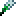
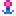
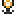

Main Cast
Sonic

He's the world's most famous hedgehog: Sonic's known for running faster than the speed of sound, and he's always there to help anyone in need. For years, he's been saving the world from the evil Dr. Eggman.
Info
- Origin: Sonic the Hedgehog (1991)
- Creator: SEGA / Sonic Team
- Special Transformation: Super Sonic
- Transformation Requirement: 7 Chaos Emeralds + 50
- Unique Trait: Runs on water at high speeds
Moveset
![[Down]](images/icons/buttons/down.png) +
+![[A]](images/icons/buttons/a.png) : Spin Dash
: Spin Dash
- : Instashield (air)
![[B]](images/icons/buttons/b.png) : Air Dash (air)
: Air Dash (air)
- /: Drop Dash (air)
- (
 ): Sonic Boom
): Sonic Boom
- (): Feather Dash (air)
- (): Bounce
- (): Double Jump
- Water mobility is slightly increased
- You attract nearby coins and rings


Tails

This orange genius is capable of using his two tails to fly and keep up with his best friend, Sonic. His intellect has lead to the creation of many useful items.
Info
- Origin: Sonic the Hedgehog 2 (1992)
- Creator: SEGA / Sonic Team
- Special Transformation: Super Tails
- Transformation Requirement: 7 Chaos Emeralds + 50+ Rings
Moveset
To be added later


Knuckles

Rougher than the rest of them, tougher than leather. As the last echidna standing, he has the duty of guarding Angel Island's precious gem, the Master Emerald, from getting in the wrong hands.
Info
- Origin: Sonic the Hedgehog 3 & Knuckles (1994)
- Creator: SEGA / Sonic Team
- Special Transformation: Super Knuckles
- Transformation Requirement: 7 Chaos Emeralds + 50+ Rings
- Unique Trait: Can break cracked ground


Moveset
To be added later
Amy Rose

A Sonic-infatuated girl who's always willing to help out those in need. She has grown to be able to defend herself with her trusty Piko Piko Hammer. With her strength now, be ready to stand out of her way.
Info
- Origin: Sonic CD (1993)
- Creator: SEGA / Sonic Team
- Special Transformation: Super Amy
- Transformation Requirement: 7 Chaos Emeralds + 50+ Rings
Moveset
To be added later
Mario

Mario is the revered hero of the Mushroom Kingdom. With his jumping and running skill, he's the best man to call if you want a Goomba stomped, a Pirahna Plant out of your pipe, or the princess saved.
Info
- Origin: Donkey Kong (1981)
- Creator: Nintendo
Moveset
To be added later
Luigi

The scaredy brother to Mario, Luigi is packing on some skils of his own, his jumps are even better than his brother's, and having mastered the Thunderhand, he's a force to be reckoned with.
Info
- Origin: Mario Bros. (1983)
- Creator: Nintendo
Moveset
To be added later
Peach

- Origin: Super Mario Bros. (1985)
- Creator: Nintendo
- Special Transformation: Emotions (Anger, Joy, Sadness and Fear)
- Transformation Requirement: Uses power-ups to transform
- Unique Trait: Uses a 3 Heart life system and has no small form
Moveset
TBD
Toad

Toads are mushroom people that make up the backbone of the Mushroom Kingdom. Peaceful by nature, they often need to be saved. This one brave Toad holds some unprecedented strength and has stood right next to Mario to help save the Mushroom Kingdom.
Info
- Origin: Super Mario Bros. (1985)
- Creator: Nintendo
Moveset
To be added later
Wario

Wario is an avid treasure hunter intent on always getting richer. While he may not jump as high as his rival Mario, his strength lets him burst through anything to get whatever he wants. He reeks of garlic.
Info
- Origin: Super Mario Land 2 (1992)
- Creator: Nintendo
- Unique Trait: Can break cracked ground
Moveset
To be added later
Waluigi

- Origin: Mario Tennis (2000)
- Creator: Nintendo / Camelot
Moveset
TBD
Shantae

- Origin: Shantae
- Creator: WayForward
- Special Transformations: Elephant, Monkey, Crab, and Harpy forms
- Transformation Requirement: Press Z while not transformed
- Unique Trait: Uses magic spells and transformations instead of regular power-ups
Moveset
TBD
T-Rex

*Placeholder
- Origin: Google Chrome
- Creator: Google
- Unique Trait: Can't stop in place (running all the time, unless he can't move)
Moveset
TBD
Lilac

*Placeholder
- Origin: Freedom Planet
- Creator: GalaxyTrail
- Unique Trait: Uses power-ups to restore energy and has a health bar
Moveset
TBD
Quote

*Placeholder
- Origin: Cave Story
- Creator: Studio Pixel
- Unique Trait: Uses weapons instead of power-ups
Moveset
TBD
Kirby

- Origin: Kirby's Adventure
- Creator: Nintendo / HAL Laboratory
- Special Transformation: Ability Transformations
- Transformation Requirement: Inhaling objects
- Unique Trait: Inhaling and Transformations
Moveset
TBD
Other characters to be added...
Extra Charms
These characters aren't part of the main cast, but will be added as charms after the main cast is finished.
Spark
A huge fan of the blue blur and wanting to be just like him, Spark uses his electric speed to help others whenever he can. He's still learning to control his powers, so he will mess up every once and a while.
Info
- Design Origin: Crossover Sonic 3D RPG - ROBLOX (2017)
- Playable Origin: Sonic Boll 2.0 (Deleted Skin)
- Creator: SA64
- Special Transformation: Super Spark
- Transformation Requirement: 7 Chaos Emeralds + 50+ Rings
- Unique Trait: Uses shields instead of power-ups
Moveset
TBD
Seco
Originally planned to be a charm like many others, with a meter based gameplay, Seco has yet to make a playable appearance. Maybe someday the world shall experience this...
Info
- Boll Deluxe 2.0.6b (unreleased)
- Creator: Poker
- Special Transformation: Turbo Seco
- Transformation Requirement: Turbo Meter [Fuel]
- Unique Trait: Turbo Meter filled through coins, enemies and power-ups, Turbo Mode enhances stats and abilities.
Moveset
TBD